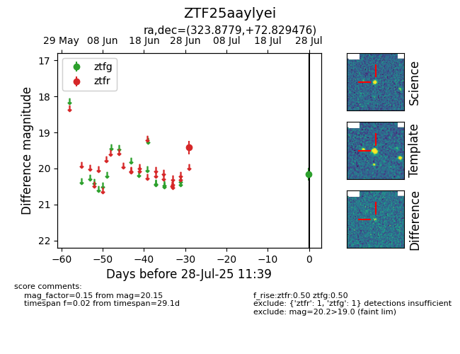

Target ZTF25aaylyei at 2025-07-28 11:39, see:
FINK: fink-portal.org/ZTF25aaylyei
Lasair: lasair-ztf.lsst.ac.uk/objects/ZTF25aaylyei
ALeRCE: alerce.online/object/ZTF25aaylyei
alt names
ZTF25aaylyei (ztf,fink)
coordinates:
equatorial (ra, dec) = (323.8779,+72.82948)
galactic (l, b) = (109.5829,+15.26148)
photometry
last ztfg=20.15, ztfr=19.42
1 ztfg, 1 ztfr detections
